Selected Work
Made for
the real world.
Monumental sculpture, public art and immersive environments created for hospitality, museums, cultural spaces and public life.
Honoring people. Celebrating identity. Preserving heritage.
Selected Projects
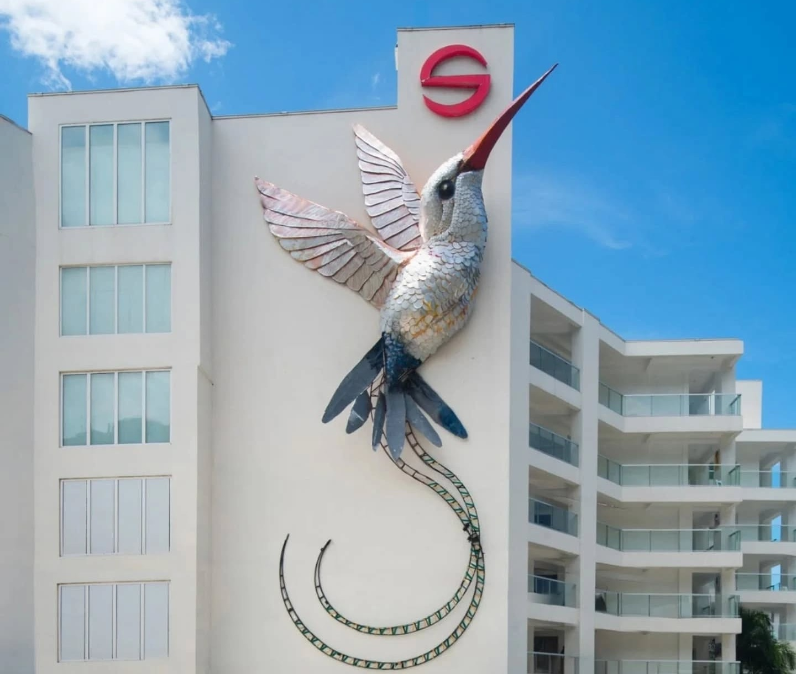
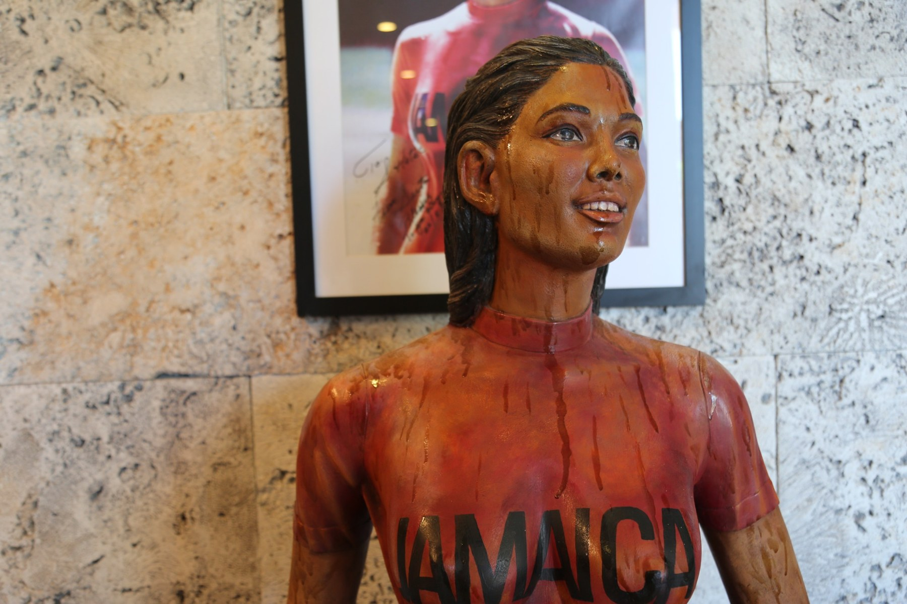

Marine Installation
Marine forms · Interior installation
An ocean-inspired wall relief and sculptural octopus bring marine forms into an interior setting.


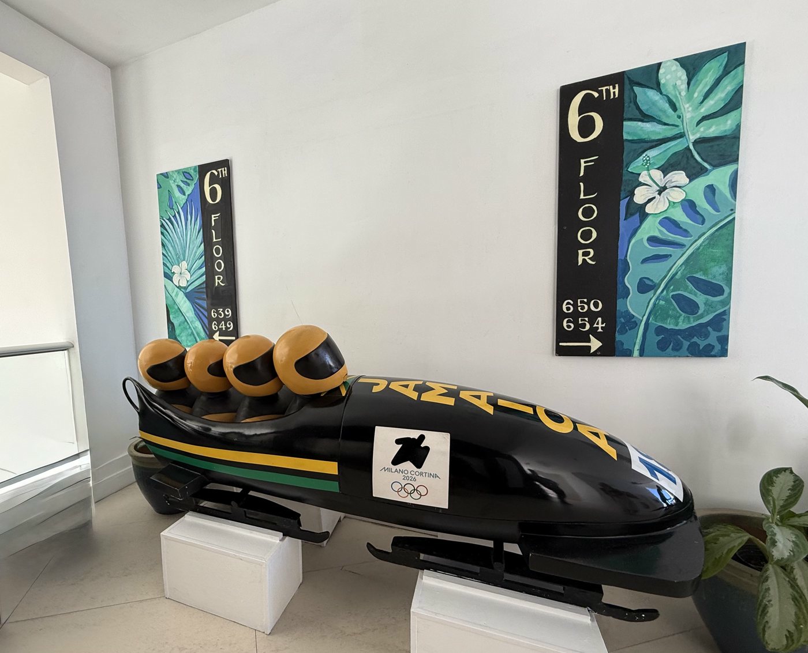
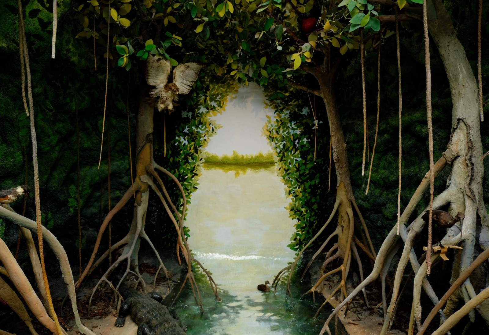
Natural History Museum of Jamaica
Immersive natural environments
A large-scale sculptural installation recreating Jamaican natural environments, including dry forests, wetlands, rainforest canopy, coral reefs, caves and marine environments. The project involved extensive research, mould-making, sculpting, painting and installation, incorporating recycled materials.
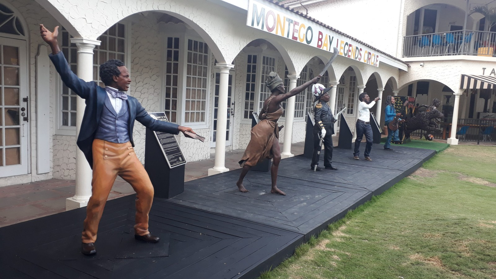
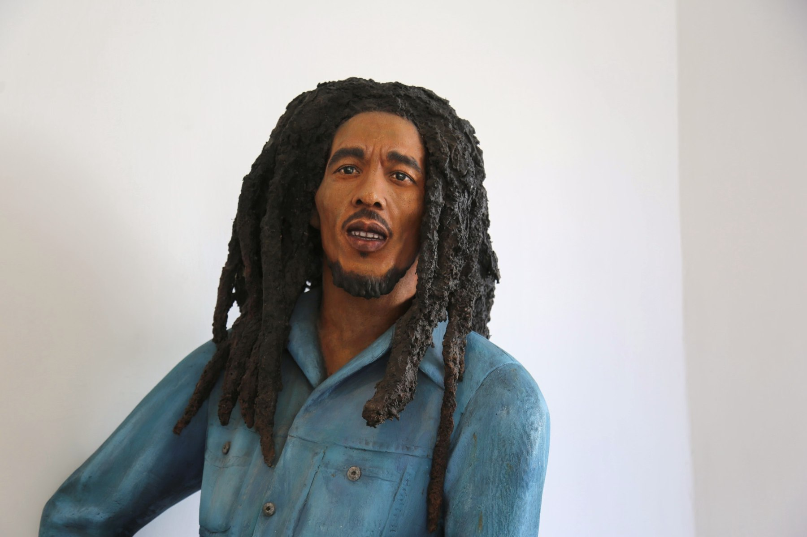
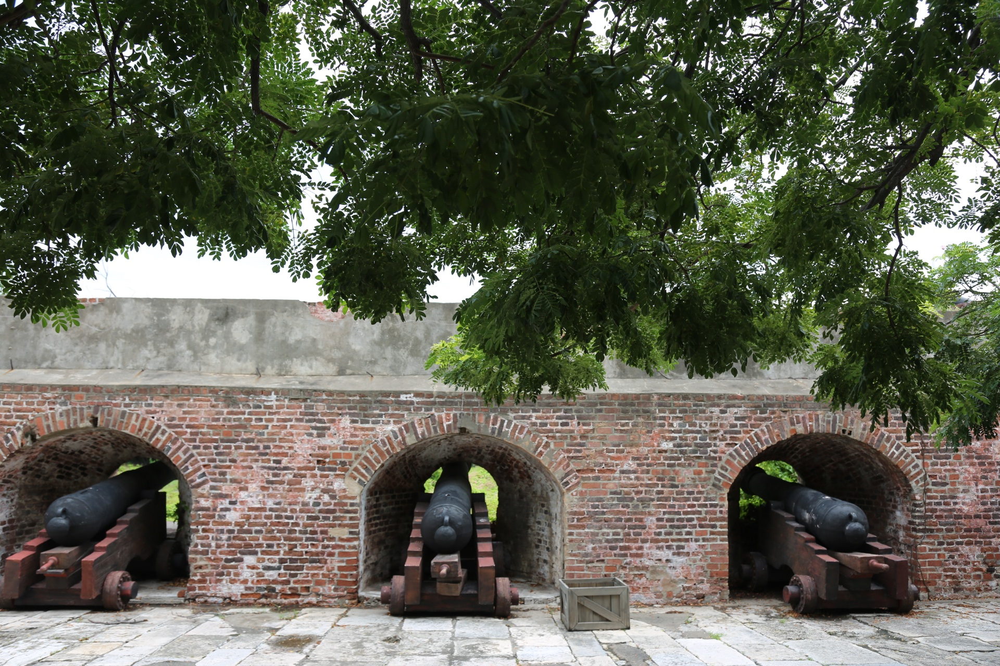
Port Authority Sculptures
Large-scale heritage sculptures
A series of large-scale sculptural pieces created for the Port Authority, including approximately 10-foot cannon replicas designed to resemble historical 18th-century pieces and incorporate the appearance of weathering and age.
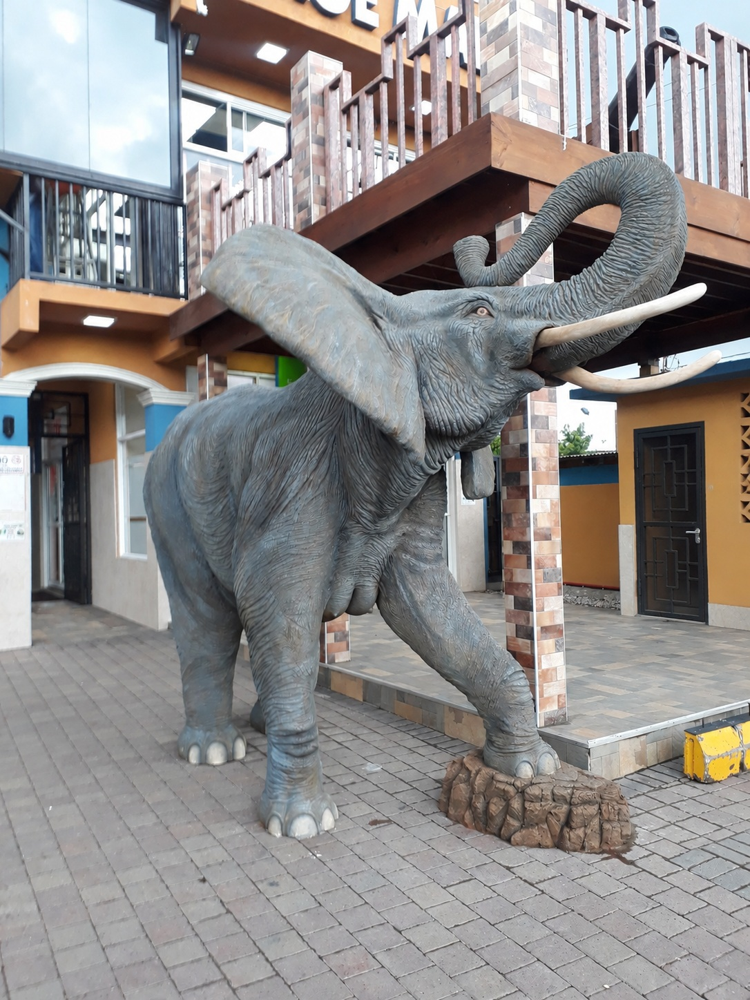
Heritage Mall Elephant
Monumental animal sculpture
A large-scale elephant sculpture created as a sculptural installation for Heritage Mall.
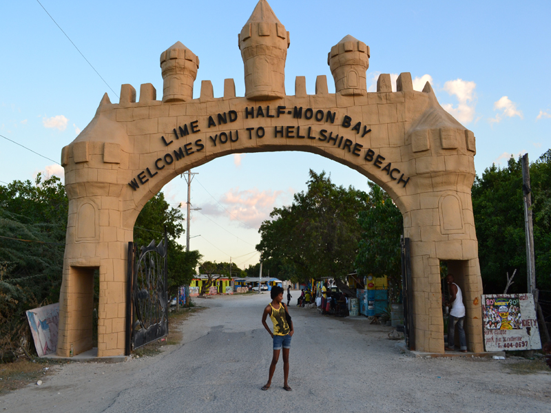

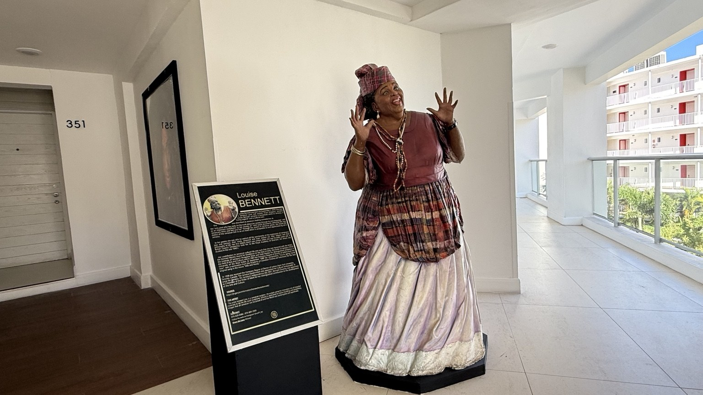
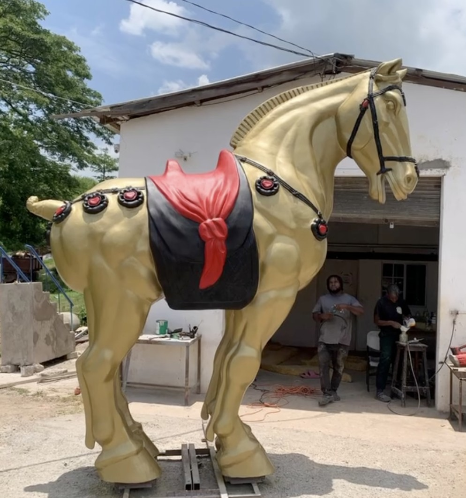
12-foot Horse — P.F. Chang’s
12-foot sculptural installation
A signature stylized horse created for P.F. Chang’s, measuring 12 feet high and 12 feet long. The commission marked the studio’s first major international project.
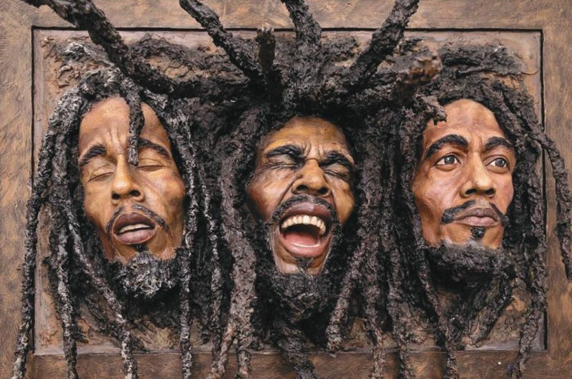
Selected Archive
Portraits · Public sculpture · Event installations
A selection from the studio archive, bringing together expressive portraits, figurative sculpture and immersive event entrances.
Our clients
Big ideas.
Lasting impressions.
Our clients bring ambitious ideas. We turn them into sculptures, installations and experiences that engage audiences and leave a lasting impression.
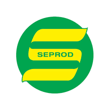
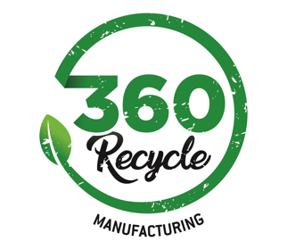
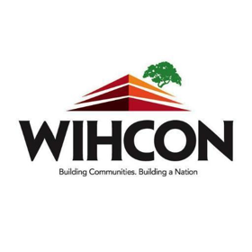
International commissions
Looking for something
that doesn't exist yet?
Explore what Scheed can create for public spaces, destinations, museums, hospitality and cultural projects.
Explore Capabilities